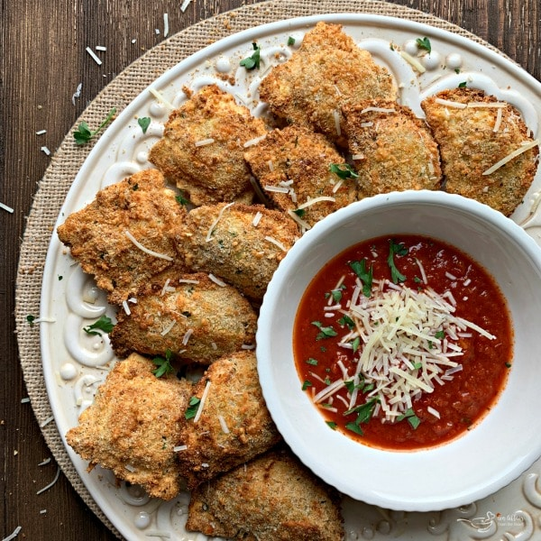

Air Fried Ravioli

Air Fried Ravioli
Ingredients
1 Large egg
1 Tablespoon water
1/4 Cup Italian-style bread crumbs
1/4 Cup freshly grated Pecorino Romano cheese
1 (9 ounce) Package refrigerated spinach and mozzarella ravioli
Olive oil cooking spray
1 Cup marinara sauce, heated
Steps
- Preheat an air fryer to 350 degrees F (175 degrees C) according to manufacturer's instructions.
- Beat egg and water together in a small bowl. Combine bread crumbs and Pecorino Romano cheese on a plate. Dip 1 ravioli into beaten egg mixture, then into bread crumb mixture, pressing to coat. Place ravioli on a plate and repeat with remaining ravioli. Lightly spray ravioli with cooking spray.
- Place as many ravioli in the air fryer basket as you can without overlapping them.
- Cook in the preheated air fryer for 6 minutes. Flip ravioli using tongs and cook for 4 minutes more. Remove from the air fryer and repeat with remaining ravioli. Serve with your favorite marinara sauce for dipping.